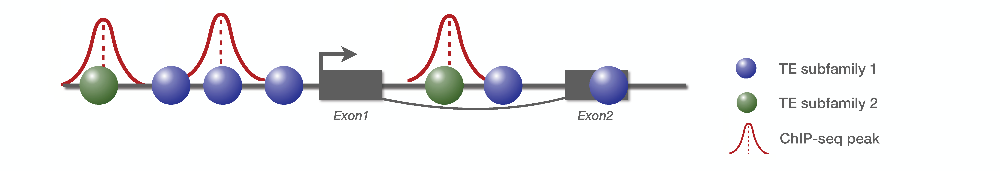
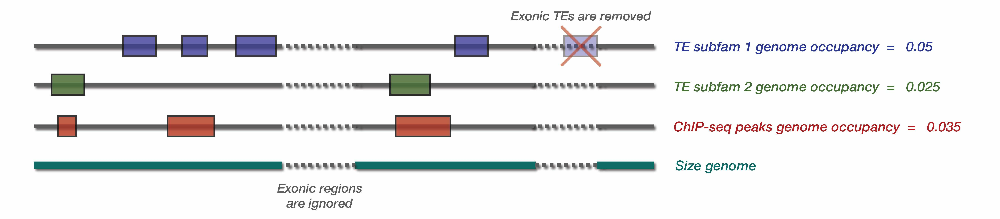
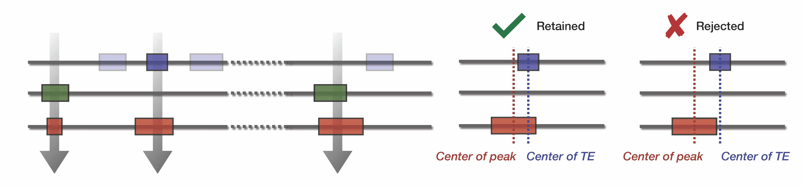

Welcome to pyTEnrich’s documentation!¶
A code for to compute statistical enrichment of transposable elements on a group of bed files. Code written by Alexandre Coudray from the laboratory of Virology and Genetics at the EPFL in 2019.
Contents:
Overview of the methods¶
To compute the statistical enrichment, pyTEnrich compare the overlap between input bed files and transposable elements families. pyTEnrich uses a binomial model to compare the observed overlap to the expected one, given a probability computed from the genome occupancy of TE families. The goal is to compute a fold change and a p-value for the overlap observed between each TE families and a group of input bed files.
Example
We consider a small genome with one gene composed of two exons, and two TE families. There is 3 ChIP-seq peaks detected :
Step 1 : Compute genome occupancy
First, pyTEnrich compute genome occupancy for TE families and input bed files.
Note that TE genome occupancy are pre-computed for the provided TE database. If another TE database is given, or if a genome subset is provided (explained below), it will be re-computed (takes a few minutes).
Step 2 : Intersect TE and Input bed files and count overlap
Using Bedtools intersect (link to website), we compute a stringent overlap between input bed files and TE database. The observed overlap are counted to be compared with the expectations.
Step 3 : Compute the enrichment of TE subfamily / family
For each input bed files, and enrichment is performed using a binomial test. The two possible outcome according to our model is : either TE overlap with peak (success) or no overlap (failure) with a probability p. p was calculated using genome occupancy of each TE subfam. The number of trials N corresponds to the number of peaks in input bed file.
The binomial probability of having k successes from n trials is given by
We can calculate the probability to have at least k success by suming up probabilities, from k success to n success. As often the number of success is on the low edge, we prefer to compute the inverse probability :
This probability is our p-value of having at least k success, given a probability p for the overlap, and n trials. The p-values obtained above are then adjusted with the Benjamin-Hochsberg method to correct for multiple testing.
Enrichment analysis example on Imbeault et al. dataset
Using the abovementionned approach, TE enrichment analysis was performed for 321 ChIP-exo from Imbeault et al. 2018 dataset.

Optional parameter : Genome subset
A genome subset can be given as an optional parameter to compute the enrichment only on a subset of the genome. For instance, we might interest ourself only on the neighborhood of transcription start sites (TSS). Therefore, a bed file containing these regions can be provided through the –genome_subset parameter.